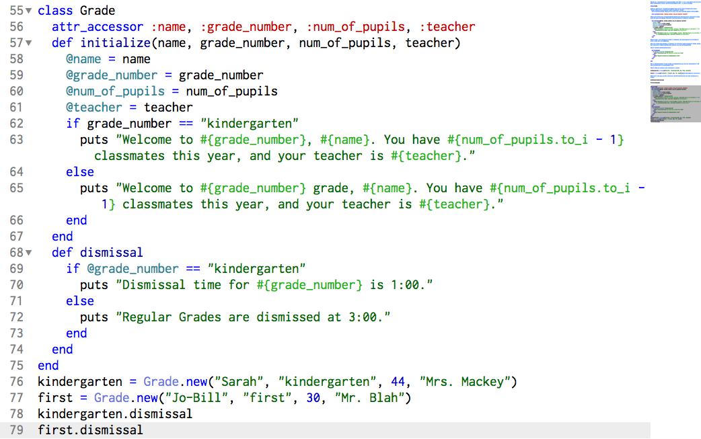

At times in coding it is necessary to have tons of objects that are similar in many ways, but different as well. To create instances of each object and pass along its similar characteristics every time would get extremely repetitive and time consuming. Luckily we can make use of Ruby Classes to do a lot of the repetitive work for us. Classes can be thought of as different catergories of things. You can have many different catergories and many different things or "objects" in each catergory. Different "objects" can have many similarities in type, but also be different in their appearance or qualities. Let's look at this in a real world environment like a school.
I went to a small school that had K-12 grade all together. The school has certain things that are similar in structure, like every grade has a teacher and students, but every grade does not have an equal number of students. So there are some similarities in each grade, but at the same time they have differences too. The thing that is constant is that every grade is the same type of thing. So in order to group all of these grades together in one place, the school, we would create a "class" for it in Ruby. Here's an example:
#Grade is a constant and is capitalized to show this. It is a new object and can have many instances of itself. Different grades(1st,2nd....) are all Grades.
class Grade
#This is setting up "instance variables" that can be used throughout the class "Grade" These are attributes of each instance of "Grade"
#(attribute accessor) these will be seen like this: @grade_number,@teachers etc.
attr_accessor :name, :grade_number, :num_of_pupils, :teacher
#This will define the initialize method which will populate every instance of Grade with the same attributes. These are required inputs to create an instance.
def initialize(name, grade_number, num_of_pupils, teacher)
@name = name
@grade_number = grade_number
@num_of_pupils = num_of_pupils
@teacher = teacher
if grade_number == "kindergarten"
puts "Welcome to #{grade_number}, #{name}. You have #{num_of_pupils.to_i - 1} classmates this year, and your teacher is #{teacher}."
else
puts "Welcome to #{grade_number} grade, #{name}. You have #{num_of_pupils.to_i - 1} classmates this year, and your teacher is #{teacher}."
end
end
#Every time a new instance of Grade is produced, the greeting will be printed out with a puts (put string)method.
#You can create new methods, or actions, to perform on each instance of Grade. Using dot notation to combine methods and objects, you can manipulate them.
#Here's another method definition:
def dismissal
if @grade_number == "kindergarten"
puts "Dismissal time for #{grade_number} is 1:00."
else
puts "Regular Grades are dismissed at 3:00."
end
end
end
#So we determine that if your Grade is kindergarten, you will be dismissed at 1:00 and everyone else is dismissed at 3:00.
#Here's how you create a new instance of a Grade:
kindergarten = Grade.new("Sarah", "kindergarten", 44, "Mrs. Mackey")
first = Grade.new("Jo-Bill", "first", 30, "Mr. Blah")#Required inputs to initialize
#And here's how you use dot notation to perform actions on your new instance of a Grade:
kindergarten.dismissal
first.dismissal
So creating classes in Ruby is very useful for making lots of similar items more quickly than creating them individually. It's a nice way to keep your objects from growing out of control and consuming your time making them. Classes will keep them all together within the same guidelines, but will allow you to make them as individual as they need to be. Classes are a super useful tool.
All content contributed or approved by Peter Fitzpatrick
Copyright © Peter Fitzpatrick 2014